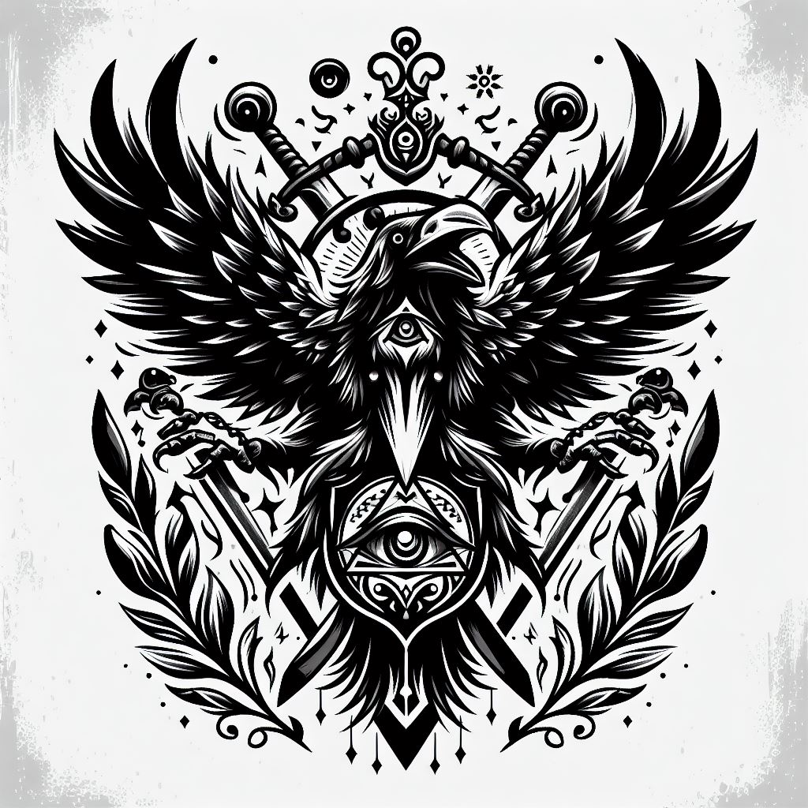

Caio Jr.
Homem branco, alto, cabelo escuro, estrutura corporal desenvolvida, 27 anos.
Acrobacia: |Investigação: | Adestramento: 5 |Luta: 5 | artes: |Medicina: 5 | Atletismo: |Ocultismo: | Atualidades: |Percepção: | Ciências: |Pilotagem: | Crime: |Pontaria: | Dipolmacia: |Profissão: | Enganação: |Reflexos: 5 | Fortitude: 5 |Religião: | Furtividade: |Sobrevivência: 5 | Iniciativa: |Tática: | Intimidação: |Tecnologia: | Intuição: 5 |Vontade: | ------------------------------------------- Informações adicionais:
Contatos com o PARANORMAL: Baixo Ultimo NEX registrado: 678-1(15%) Conhecimento sobre o oculto: básico Nível de confiança: Leal Rituais portados: Nenhum Poderes paranormais: Nenhum Conclusão de status = Estavel
Ativ.realizada previamente: Médico Conhecimento bélico: Armas cortantes Preparo físico: Atlético Preparo mental: mediano Função = Protetor Comclusão de status = capacitado Local de atuação = Corvus Equipe atual = I.S.A.C-3 Missão atual = loding..... Status = Ocupacionado
Itens em posse: Custos: Espada(amaldiçoada) [1]| [ 5,0kg] R$ 145,00 Cicatrizantes [2]| [ 3,0kg] R$ 54,99 2x Machadinhas [2]| [ 8,0kg] R$ 89,75 2x Kit de sobrevivência [2]| [15,0kg] R$ 67,50 2x Aréu e corda [1]| [ 2,0kg] R$ 30,00 Kit químico [1]| [ 5,0kg] R$ 45,00 Monóculo [1]| [ 0,2kg] R$ 31,15 Peso total = 38,2 kg Custo total = R$ 463,39

3
1
2
1
2